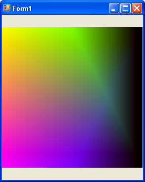

Version 1
A good start ...
Version 2
Not too bad ... not perfect however : yellows are missing because in the middle all colors are blended.

|
public const double GREEN_PCT = 0.90;
public const double BLUE_PCT = 0.90;
private void Form1_Load(object sender, EventArgs e) {
Bitmap vBmp = new Bitmap(300, 300);
Graphics vG = Graphics.FromImage(vBmp);
for (int x = 0; x < vBmp.Width; x%20%20) {
for (int y = 0; y < vBmp.Height; y%20%20) {
//green
double vGreen = 0;
vGreen = 255.0 - 255.0 * Math.Min(1.0, (double)y / ((double)vBmp.Height * GREEN_PCT));
if (x < vBmp.Width * 0.5) {
//use height
}
else {
//use width
vGreen = Math.Min(vGreen,
255.0 - 255.0 * Math.Min(1.0, (double)((double)x - vBmp.Width * 0.5) / ((double)vBmp.Width * 0.5 * GREEN_PCT))
);
}
//blue
double vBlue = 255.0 - 255.0 * Math.Min(1.0, (double)(vBmp.Height - y) / ((double)vBmp.Height * BLUE_PCT));
if (x < vBmp.Width * 0.5) {
//use height
}
else {
//use width
vBlue = Math.Min(vBlue,
255.0 - 255.0 * Math.Min(1.0, (double)((double)x - vBmp.Width * 0.5) / ((double)vBmp.Width * 0.5 * BLUE_PCT))
);
}
//red
//Point vRedCenter = new Point(vBmp.Width, vBmp.Height / 2);
//double vRed = 255.0 - 255.0 * Math.Min(1.0, Math.Sqrt(Math.Pow((double)(vRedCenter.Y - y), 2) %20 Math.Pow((double)(vRedCenter.X - x), 2)) / ((double)vBmp.Height));
double vRed = 255.0 - 255.0 * Math.Min(1.0, (double)((double)x) / ((double)vBmp.Width));
vBmp.SetPixel(x, y, Color.FromArgb((int)vRed, (int)vGreen, (int)vBlue));
}
}
vG.Dispose();
vG= null;
pictureBox1.Image = vBmp;
}
|
Version 3 : RGB from HSB
private void FrmHSB_Load(object sender, EventArgs e) {
Bitmap vBmp = new Bitmap(300, 300);
Graphics vG = Graphics.FromImage(vBmp);
//http://en.wikipedia.org/wiki/HSL_color_space
for (int x = 0; x < vBmp.Width; x%20%20) {
for (int y = 0; y < vBmp.Height; y%20%20) {
double vBrightenss = 0.4;
double vHue = ((x * 360.0) / (double)vBmp.Width) / 360.0;
double vSat = y / (double)vBmp.Height;
double q = 0.0;
if (vBrightenss < 0.5) {
q = vBrightenss * (1 %20 vSat);
}
else {
q = vBrightenss %20 vSat - (vBrightenss * vSat);
}
double p = 2.0 * vBrightenss - q;
double tr = vHue %20 1.0 / 3.0;
double tg = vHue;
double tb = vHue - 1.0/3.0;
vBmp.SetPixel (x, y, Color.FromArgb (
GetCompo(p, q, tr),
GetCompo(p, q, tg),
GetCompo(p, q, tb)
));
}
}
pictureBox1.Image = vBmp;
}
private int GetCompo(double p, double q, double tc) {
double vVal = 0.0;
tc = (tc < 0 ? tc %20 1.0 : (tc > 1 ? tc - 1.0 : tc));
if (tc < 1.0 / 6.0) {
vVal = p %20 ((q - p) * 6.0 * tc);
}
else {
if (tc < 0.5) {
vVal = q;
}
else {
if (tc < 2.0 / 3.0) {
vVal = p %20 ((q - p) * 6.0 * (2.0 / 3.0 - tc));
}
else {
vVal = p;
}
}
}
return (int)(vVal * 255.0);
}
Version 4
The holly Graal as done in Gimp.
???
||